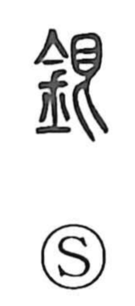

Explanation
銀 is a phono-semantic character: the metal radical 金 signals a metal, while 艮 serves as the phonetic, as in 垠 (“border, end”), pointing to the on-reading gin. The Shuowen glosses it as “white metal,” not any pale metal but silver itself—the whiteness being the natural color of the substance. In antiquity copper was called akagane (“red metal”), and gold, silver, and copper were esteemed as the three principal metals. Bronze, formed by adding tin to copper, can sometimes take on a silvery sheen; among the vessels excavated from the Zhongshan royal tomb (about 2,300–2,400 years ago) are many refined pieces intricately inlaid with gold and silver. In later times silver became a medium of currency, a legacy still heard in compounds such as ginko, “bank,” literally “silver institution.”